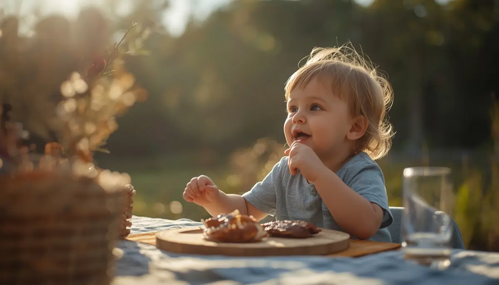

Celebraciones, cumpleaños y viajes seguros
La vida social en la infancia está repleta de cumpleaños, fiestas escolares, excursiones y reuniones familiares donde la comida suele ocupar un papel central. Convivir con la celiaquía no debe significar de ningún modo el aislamiento de estos momentos de alegría y convivencia. Planificar con antelación, comunicarse con los organizadores y llevar siempre recursos propios permite disfrutar plenamente de la vida social sin descuidar un ápice la seguridad alimentaria.
Disfrutar de los cumpleaños y fiestas infantiles con tranquilidad
Las fiestas de cumpleaños y eventos con amigos generan a veces inquietud por la presencia de aperitivos y tartas con gluten. Una estrategia maravillosa consiste en hablar previamente con las familias anfitrionas para explicar la situación con naturalidad, o bien preparar para el menor una pequeña caja sorpresa con sus snacks y repostería sin gluten favoritos para que pueda merendar exactamente lo mismo que sus compañeros sin sentirse excluido.
"La inclusión social no se logra evitando los eventos, sino anticipando soluciones seguras que permitan al niño participar de la fiesta con absoluta normalidad."
Viajes y comidas fuera de casa sin sobresaltos
Salir de viaje o comer en restaurantes requiere una dosis extra de previsión, pero es perfectamente compatible con una rutina plena y feliz:
1. Investigar y seleccionar establecimientos seguros: Utilizar aplicaciones especializadas y contactar previamente con los restaurantes para confirmar que disponen de protocolos reales frente a la contaminación cruzada.
2. Llevar siempre provisiones de emergencia: Meter en la mochila barritas, pan sin gluten u otros alimentos seguros previene imprevistos ante retrasos en los desplazamientos o menús imprevistos.
Construyendo recuerdos felices más allá de las restricciones
Enseñar al menor a desenvolverse en su vida social con autonomía y confianza refuerza su seguridad personal. Con una buena planificación y la complicidad de su entorno, las celebraciones y los viajes se convierten en experiencias entrañables libres de preocupaciones.
➔ Volver al índice de Celiaquía e intolerancias